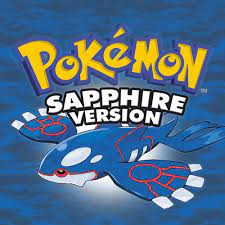
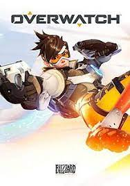
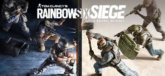

Pokemon Sapphire was my first video game.
It was released along with Pokemon Ruby, in Japan on November 21, 2002, and internationally in 2003. However I did not play the game until 2008 when my grandpa gifted it to me on my birthday. Pokemon Sapphire is the reason Pokemon is such a big part of my childhood and the reason why playing video games is one of my main hobbies.
It was released along with Pokemon Ruby, in Japan on November 21, 2002, and internationally in 2003. However I did not play the game until 2008 when my grandpa gifted it to me on my birthday. Pokemon Sapphire is the reason Pokemon is such a big part of my childhood and the reason why playing video games is one of my main hobbies.

Overwatch came out on May 24, 2016, and 6 years later on October 4, 2022, Overwatch 2 came out.
The biggest difference between Overwatch and Overwatch 2 is that it went from being a 6v6 game to 5v5. There are three roles in Overwatch: Damage, Support, and Tank. I usually play support, mainly playing Ana or Moira.
The biggest difference between Overwatch and Overwatch 2 is that it went from being a 6v6 game to 5v5. There are three roles in Overwatch: Damage, Support, and Tank. I usually play support, mainly playing Ana or Moira.

Rainbow Six Siege (R6) came out on December 1, 2015.
Just like Rocket League, R6 has been one of the games I have played the most consistently since its launch. It is a 5v5 strategic shooter where teams take turns defending and attacking. There are different operators (characters) on offense and defense. My favorite attacking operators are Lion and Ace, and my favorite defending operators are Thorn and Mute.
Just like Rocket League, R6 has been one of the games I have played the most consistently since its launch. It is a 5v5 strategic shooter where teams take turns defending and attacking. There are different operators (characters) on offense and defense. My favorite attacking operators are Lion and Ace, and my favorite defending operators are Thorn and Mute.

Grand Theft Auto 5 (GTA5) was released on September 17, 2023 on the PlayStation 3 and XBOX 360.
Since its initial release, GTA5 released on the PlayStation 4 and the XBOX One in November 2014, and on the PlayStation 5 and XBOX Series X/S in March 2022. GTA5 might be my most played game on PS4 after its release onto PS4 but I have not consistently played it anywhere near as much as Rocket League or R6.
Since its initial release, GTA5 released on the PlayStation 4 and the XBOX One in November 2014, and on the PlayStation 5 and XBOX Series X/S in March 2022. GTA5 might be my most played game on PS4 after its release onto PS4 but I have not consistently played it anywhere near as much as Rocket League or R6.

Cyberpunk 2077 (CP77) released on December 10, 2020 for the PlayStation 4 and XBOX One,
and on February 2022 it was released onto PlayStation 5 and XBOX Series X/S.
CP77 had a very rocky release and so I abstained from playing it until after I watched the CyberPunk: EdgeRunners anime that released on September 2022. CP77 quickly became my favorite single-player game (after Pokemon Sapphire due to nostalgia).
CP77 had a very rocky release and so I abstained from playing it until after I watched the CyberPunk: EdgeRunners anime that released on September 2022. CP77 quickly became my favorite single-player game (after Pokemon Sapphire due to nostalgia).